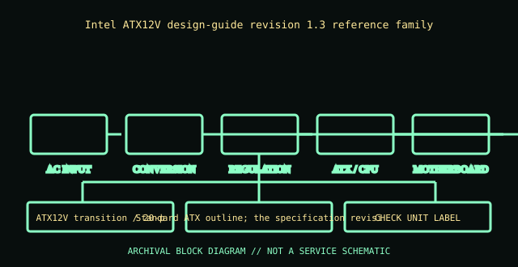

[ POWER CONVERSION // IDENTIFIED MODEL ]
Intel ATX12V 1.3 power-supply profile
Intel ATX12V design-guide revision 1.3 reference family. This record is bounded to the named unit, standard revision, or model family below; nearby model names and replacement parts are not presumed equivalent.

HIGH-VOLTAGE SAFETY: Unplug before external inspection. Never open a power supply. Dangerous voltage can remain inside after it is disconnected. Do not attempt internal repair; use qualified service or replace the unit.
Verified identity & specifications
| Catalog identity | Intel ATX12V design-guide revision 1.3 reference family |
|---|---|
| Form factor / era | ATX12V transition / 20-pin ATX plus 4-pin CPU |
| AC input | The guide defines electrical requirements, not a product-specific AC input; read the actual supply nameplate. |
| DC output rating | Adds a dedicated +12 V CPU power path and defines regulated +12 V, +5 V, +3.3 V, −12 V, and +5 VSB behavior; rail current remains model-specific. |
| Mechanical envelope | Standard ATX outline; the specification revision does not dictate a single PSU length or cooling layout. |
| Connectors / interface | 20-pin main ATX connector plus 4-pin ATX12V CPU connector in the usual generation; consult the design guide for pinout and signal details. |
| Revision differences | Revision 1.3 reflects changed minimum loading/efficiency and legacy −5 V treatment versus earlier ATX-family designs; implementation date and actual connector population vary by product. |
Compatibility & safe handling
- Match full model, suffix, region, revision and DC output label to the official documentation. Rated total watts alone do not establish rail or transient compatibility.
- Before replacement, confirm AC input range, rail current/combined limits, motherboard signaling and pinout, mechanical envelope, fasteners, cooling direction, and every required connector.
- Never open the PSU, defeat protective earth, or probe its internals. Do not energize a wet, cracked, corroded, burned, modified, or unidentified supply.
- Modular cable pinouts are not standardized at the PSU end. Use only cables expressly approved for this exact model/revision; matching plugs can have different wiring.
Model and revision notes
Revision 1.3 reflects changed minimum loading/efficiency and legacy −5 V treatment versus earlier ATX-family designs; implementation date and actual connector population vary by product.
Intel ATX12V Power Supply Design Guide (standards source); match the revision called out on the manufacturer data sheet.
Archival notes
Catalogued as a bounded standards family, not a product SKU. Record the standard revision printed in a product manual; never infer motherboard compatibility from the ATX label alone.
Photograph the complete nameplate, assembly/model code, revision/date code, input selector if present, cable ends and mounting side. Separate observed label data from published specifications and preserve the referenced manual issue.
Manufacturer / standards references
- Intel ATX12V Power Supply Design Guide (standards source)Intel ATX12V Power Supply Design Guide (standards source); match the revision called out on the manufacturer data sheet.
- Intel — ATX / ATX12V Power Supply Design GuideStandards reference for the ATX electrical/mechanical family; use the revision specified for the product. Historical IBM supplies are not ATX and must not be adapted on this basis.
The exact nameplate and corresponding manufacturer manual remain controlling for regional and hardware revisions.